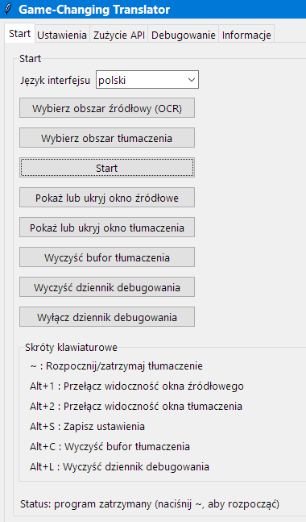
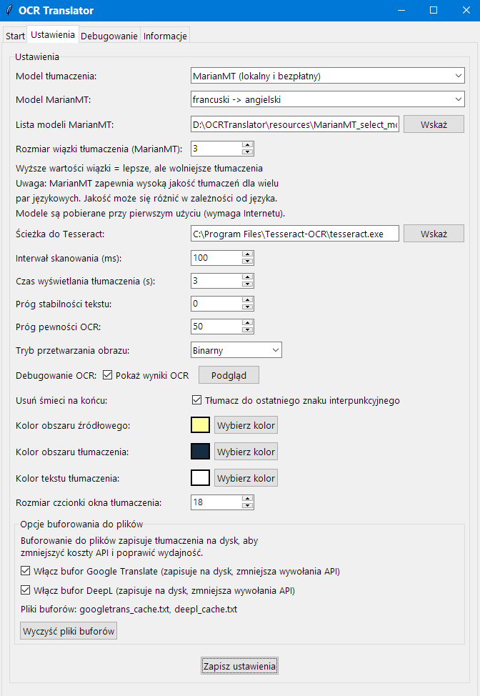
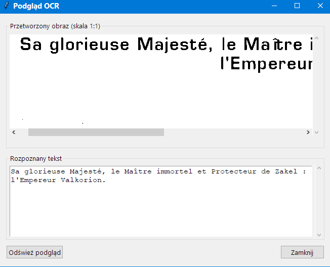
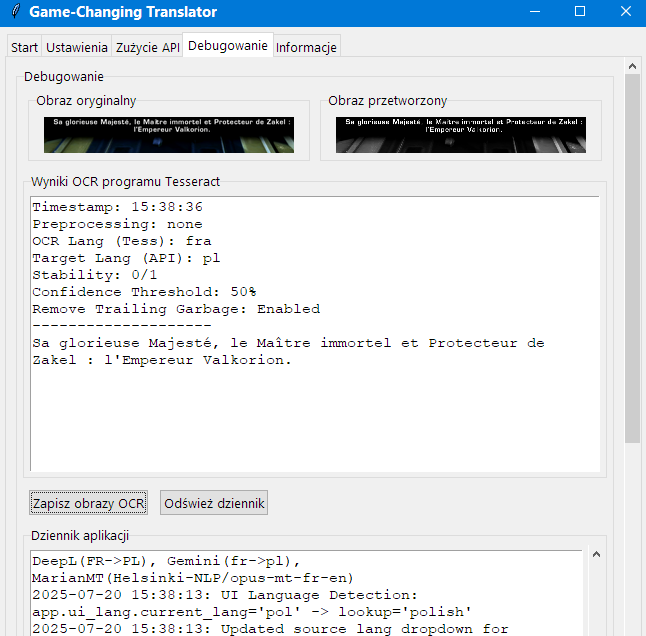

Instrukcja obsługi programu Game-Changing Translator
Copyright © 2025 Tomasz Kamiński
Ostatnia aktualizacja: 7 lipca 2025 r.
Spis treści
-
Wprowadzenie
-
Pierwsze kroki
-
Interfejs główny
-
Ustawianie obszarów tłumaczenia
-
Konfiguracja ustawień
-
Metody tłumaczenia
-
Gemini API – tanie tłumaczenie kontekstowe
-
Skróty klawiszowe
-
Rozwiązywanie problemów
-
Porady i najlepsze praktyki
Wprowadzenie
Game-Changing Translator to program komputerowy, który automatycznie przechwytuje tekst z dowolnego fragmentu ekranu, przeprowadza optyczne rozpoznawanie znaków (OCR) i tłumaczy tekst w czasie rzeczywistym. Dzięki ruchomym oknom nakładek tłumaczenie można umieścić w dowolnym miejscu na ekranie, przez co aplikacja doskonale nadaje się do tłumaczenia gier, filmów, plików PDF lub dowolnych programów zawierających tekst, którego nie da się łatwo skopiować i wkleić.
Pierwsze kroki
Wymagania
Przed rozpoczęciem korzystania z Game-Changing Translator sprawdź, czy system spełnia następujące wymagania:
Pierwsze uruchomienie
- Uruchom Game-Changing Translator przez wykonanie skryptu
main.py lub pliku wykonywalnego, jeśli korzystasz z wersji skompilowanej.
- Przy pierwszym uruchomieniu aplikacja ładuje się z domyślnymi ustawieniami, a oba obszary (źródłowy i docelowy) będą ukryte.
- Przed rozpoczęciem tłumaczenia musisz:
- sprawdzić ścieżkę do programu Tesseract w zakładce Ustawienia,
- wybrać obszary źródłowy i docelowy,
- skonfigurować preferowaną metodę tłumaczenia.
- Przycisk Start włącza proces tłumaczenia i automatycznie wyświetla okno tłumaczenia.
- Przycisk Stop wyłącza proces tłumaczenia i automatycznie ukrywa okno tłumaczenia.
- Widoczność okna tłumaczenia można przełączać ręcznie w dowolnym momencie za pomocą skrótu Alt+2.
Interfejs główny
Interfejs główny jest podzielony na cztery zakładki:
Zakładka Start

-
Wybierz obszar źródłowy (OCR) – określ obszar, z którego tekst będzie przechwytywany.
-
Wybierz obszar tłumaczenia – określ, gdzie ma się pojawić tłumaczenie.
-
Start/Stop – włącz proces tłumaczenia.
-
Pokaż lub ukryj okno źródłowe – przełącz widoczność obszaru przechwytywania tekstu źródłowego.
-
Pokaż lub ukryj okno tłumaczenia – przełącz widoczność obszaru tłumaczenia.
-
Wyczyść bufor tłumaczenia – usuń tłumaczenia przechowywane w pamięci, aby wymusić ponowne tłumaczenie.
-
Wyczyść dziennik debugowania – wyczyść dziennik zdarzeń aplikacji.
-
Wyłącz dziennik debugowania – wyłącz rejestrowanie zdarzeń w pliku w celu poprawy wydajności.
-
Skróty klawiszowe – lista dostępnych skrótów klawiszowych.
-
Status – aktualny stan aplikacji.
Zakładka Ustawienia

Tutaj można skonfigurować:
-
Model tłumaczenia – wybierz spośród różnych modeli tłumaczeń.
-
Język źródłowy – język źródłowy i rozpoznawany przez OCR (tylko DeepL i Google Translate).
-
Język docelowy – język tłumaczenia (tylko DeepL i Google Translate).
-
Klucz API – tylko w przypadku DeepL lub Google Translate.
-
Jakość – wybierz między opcjami Klasyczna (szybsze tłumaczenie) lub Nowej generacji (potencjalnie lepsza jakość) (tylko DeepL).
-
Opcje MarianMT – lokalne tłumaczenie neuronowe (tylko model MarianMT).
-
Opcje Gemini – tanie tłumaczenie modelem LLM z uwzględnieniem kontekstu (tylko Gemini).
-
Ścieżka do Tesseract – ścieżka do pliku wykonywalnego Tesseract OCR.
-
Interwał skanowania (ms) – jak często ma być przechwytywany ekran.
-
Czas wyświetlania tłumaczenia (s) – czas, po którym tłumaczenie zostanie usunięte, gdy zniknie tekst źródłowy.
-
Próg stabilności tekstu – liczba identycznych odczytów wymaganych przed tłumaczeniem.
-
Próg pewności OCR – minimalna pewność dla uwzględnienia tekstu wykrytego przez OCR.
-
Tryb przetwarzania obrazu – sposób przetwarzania obrazów przez OCR.
-
Debugowanie OCR – opcja wyświetlania obrazów debugowania i tekstu na zakładce Ustawienia.
-
Przycisk Podgląd – otwiera okno podglądu OCR.
-
Usuń śmieci na końcu – opcja usuwania tekstu po ostatnim znaku interpunkcyjnym.
-
Opcje wyglądu – kolory i rozmiary czcionek dla nakładek.
-
Opcje buforowania do plików – ustawienia włączania/wyłączania buforowania w przypadku DeepL i Google Translate.
Podgląd OCR

Kliknięcie przycisku Podgląd w zakładce Ustawienia otwiera osobne okno Podgląd OCR. To okno wyświetla:
-
Przetworzony obraz (skala 1:1) – wstępnie przetworzony obraz używany do rozpoznawania OCR.
-
Rozpoznany tekst – tekst obecnie rozpoznawany przez silnik OCR.
To okno podglądu jest szczególnie przydatne do precyzyjnego dostrajania ustawień OCR i zrozumienia, dlaczego niektóre teksty mogą nie być rozpoznawane prawidłowo. Można je przesuwać i zmieniać jego rozmiar niezależnie od głównego okna aplikacji.
Zakładka Debugowanie

Ta zakładka pokazuje:
-
Obraz oryginalny – nieprzetworzony przechwycony obraz.
-
Obraz przetworzony – obraz po przetworzeniu przez OCR.
-
Wyniki OCR – tekst rozpoznany przez OCR.
-
Dziennik aplikacji – bieżący dziennik zdarzeń aplikacji.
-
Zapisz obrazy OCR i Odśwież dziennik – przyciski do zapisywania obrazów debugowania i odświeżania dziennika.
Zakładka Informacje
Ta zakładka zawiera podstawowe informacje o aplikacji.
Ustawianie obszarów tłumaczenia
Wybór obszaru źródłowego
- Kliknij przycisk Wybierz obszar źródłowy (OCR).
- Ekran zostanie przyciemniony i zobaczysz czarny krzyżyk.
- Kliknij i przeciągnij, aby zaznaczyć obszar zawierający tekst, który chcesz przetłumaczyć.
- Po zaznaczeniu półprzezroczyste okno nakładki pojawi się w wybranym miejscu.
- Ta nakładka będzie domyślnie ukryta przy uruchomieniu aplikacji.
- Nakładkę można:
- przesuwać: przeciągając za pasek tytułowy;
- powiększać i zmniejszać: przeciągając dowolną krawędź lub róg;
- ukrywać lub wyświetlać: za pomocą przycisku Pokaż lub ukryj okno źródłowe lub skrótu Alt+1.
Wybór obszaru docelowego
- Kliknij przycisk Wybierz obszar tłumaczenia.
- Ekran zostanie przyciemniony i zobaczysz czarny krzyżyk.
- Kliknij i przeciągnij, aby zaznaczyć miejsce, w którym chcesz, aby pojawiło się tłumaczenie.
- Po zaznaczeniu półprzezroczyste okno nakładki pojawi się w wybranym miejscu.
- Ta nakładka będzie domyślnie ukryta przy uruchomieniu aplikacji.
- Nakładkę można:
- przesuwać: przeciągając za pasek tytułowy;
- powiększać i zmniejszać: przeciągając dowolną krawędź lub róg;
- ukrywać lub wyświetlać: za pomocą przycisku Pokaż lub ukryj okno tłumaczenia lub skrótu Alt+2.
Konfiguracja ustawień
Konfiguracja tłumaczenia
-
Model tłumaczenia:
-
MarianMT (lokalny i bezpłatny) – nie wymaga klucza API, pobiera modele przy pierwszym użyciu, działa bez połączenia z Internetem.
-
DeepL API – wymaga klucza API, zapewnia tłumaczenia wysokiej jakości.
-
Google Translate API – wymaga klucza API, obsługuje wiele języków.
-
Język źródłowy:
- Język, który będzie tłumaczony na język docelowy.
- Silnik OCR będzie używał tego języka do rozpoznawania tekstu w celu poprawy dokładności.
- Gdy zmienisz język źródłowy do tłumaczenia, język OCR zostanie odpowiednio zaktualizowany.
-
Język docelowy:
- Język, na który tekst ma zostać przetłumaczony.
- Pamiętaj, że nie wszystkie pary językowe są obsługiwane przez wszystkie metody tłumaczenia.
Konfiguracja OCR
-
Ścieżka do Tesseract:
- Powinna wskazywać miejsce instalacji programu Tesseract (np.
C:\Program Files\Tesseract-OCR\tesseract.exe).
- Użyj przycisku Wskaż, aby wskazać lokalizację.
-
Tryb przetwarzania obrazu:
-
Brak – bez przetwarzania, dobry dla wyraźnego tekstu.
-
Binarny – konwersja czarno–biała, dobra dla tekstu o wysokim kontraście.
-
Binarny odwrócony – odwrócony tryb binarny, dobry dla białego tekstu na ciemnym tle.
-
Adaptacyjny – zaawansowane progowanie adaptacyjne dla trudnych środowisk.
-
Tryb adaptacyjny:
Po wybraniu trybu przetwarzania Adaptacyjny system odblokowuje zaawansowane możliwości progowania adaptacyjnego, które doskonale sprawdzają się w trudnych środowiskach graficznych. Ten tryb jest szczególnie cenny w przypadku kłopotliwych warunków, takich jak małe napisy nałożone na dynamiczne, migające tła o stale zmieniających się kolorach i oświetleniu.
W przeciwieństwie do trzech standardowych trybów przetwarzania tryb adaptacyjny zapewnia dwa regulowane parametry, które pozwalają na precyzyjne dostrojenie procesu rozpoznawania OCR:
- Rozmiar bloku – kontroluje wielkość obszaru sąsiadującego używanego do obliczania wartości progowej. Większe wartości (np. 15–25) sprawdzają się lepiej w przypadku tekstu ze stopniowymi zmianami oświetlenia, podczas gdy mniejsze wartości (np. 7–13) są bardziej skuteczne dla tekstu z ostrymi zmianami kontrastu.
- Wartość C – działa jako stała odejmowana od średniej wartości progowej. Wartości dodatnie czynią progowanie bardziej konserwatywnym (mniej wykrywanego tekstu, ale wyższa dokładność), podczas gdy wartości ujemne czynią je bardziej agresywnym (więcej wykrywanego tekstu, ale potencjalnie więcej szumów).
Ten tryb okazuje się bezcenny, gdy standardowe przetwarzanie nie zapewnia wiarygodnych wyników. Eksperymentując z tymi dwoma parametrami, często można osiągnąć lepsze rozpoznawanie OCR niż w przypadku gotowych trybów, szczególnie gdy tła zawierają ruchome elementy, zmienne oświetlenie lub złożone wzory wizualne, które w przeciwnym razie przeszkadzałyby w wykrywaniu tekstu.
Aby uzyskać optymalne rezultaty, zacznij od umiarkowanych wartości (Rozmiar bloku: 11, Wartość C: 2) i dostosowuj je do konkretnej treści. Zwiększ Rozmiar bloku dla większego tekstu lub stopniowych zmian oświetlenia i zmieniaj Wartość C, aby zachować równowagę między przechwytywaniem całego tekstu a rozpoznawaniem go tam, gdzie go nie ma.
-
Próg pewności OCR:
- Wyższe wartości (np. 80) dają mniej wyników, ale są bardziej dokładne.
- Niższe wartości (np. 40) wychwytują więcej tekstu, ale mogą zawierać błędy.
-
Próg stabilności tekstu:
- Określa, ile identycznych odczytów OCR jest potrzebnych przed rozpoczęciem tłumaczenia.
- Wyższe wartości zmniejszają migotanie, ale zwiększają opóźnienie.
- Ustaw na 0 w celu natychmiastowego tłumaczenia (może powodować migotanie).
-
Debugowanie OCR:
- Po włączeniu pokazuje przechwycone obrazy i wyniki OCR w zakładce Debugowanie.
- Przydatne przy rozwiązywaniu problemów z rozpoznawaniem tekstu.
-
Usuń śmieci na końcu:
- Po włączeniu usuwa tekst występujący po ostatnim znaku interpunkcyjnym (kropce, wykrzykniku lub znaku zapytania).
- Przydatna funkcja do usuwania błędów OCR, które często pojawiają się na końcu rozpoznanego tekstu.
- Poprawia jakość tłumaczenia poprzez usunięcie przypadkowych znaków lub fragmentów słów.
-
Interwał skanowania (ms):
- Czas w milisekundach między kolejnymi zrzutami ekranu.
- Niższe wartości (np. 50 ms) dają szybszą odpowiedź, ale bardziej obciążają procesor.
- Wyższe wartości (np. 500 ms) zmniejszają obciążenie procesora, ale spowalniają reakcję.
-
Czas wyświetlania tłumaczenia (s):
- Czas w sekundach, po którym tłumaczenie zostanie usunięte, gdy tekst źródłowy zniknie.
- Jeśli w obszarze źródłowym nadal jest tekst po upływie tego czasu, tłumaczenie pozostanie widoczne.
- Tłumaczenie jest usuwane tylko wtedy, gdy w obszarze źródłowym nie wykryto żadnego tekstu.
- Ustaw na 0, aby tłumaczenia były widoczne bezterminowo.
-
Wyczyść bufor tłumaczenia:
- Ten przycisk usuwa tłumaczenia, które są tymczasowo przechowywane w pamięci aplikacji.
- Pamięć podręczna przechowuje najnowsze tłumaczenia, aby uniknąć ponownego tłumaczenia identycznego tekstu.
- Wyczyszczenie tej pamięci podręcznej zmusza aplikację do ponownego przetłumaczenia całego tekstu, nawet jeśli został niedawno przetworzony.
- Funkcja ta różni się od buforowania plików – dotyczy tylko tłumaczeń przechowywanych w pamięci RAM podczas bieżącej sesji.
- Przydatne, gdy chcesz zobaczyć nowe tłumaczenia lub gdy wyniki z pamięci podręcznej wydają się nieprawidłowe.
-
Opcje buforowania do plików (tylko usługi tłumaczenia za pomocą API):
-
Włącz bufor Google Translate – wykorzystuje ten sam system buforowania co DeepL (szczegółowe wyjaśnienie w sekcji DeepL).
-
Włącz bufor DeepL – zapisuje tłumaczenia DeepL w plikach na dysku, aby zmniejszyć liczbę zapytań API.
- Te opcje pomagają ograniczyć wykorzystanie API i koszty płatnych usług.
- Przycisk Wyczyść pliki buforów usuwa wszystkie zapisane tłumaczenia przechowywane w plikach.
- Te ustawienia nie dotyczą modelu MarianMT, ponieważ ten działa w trybie offline.
-
Zapisywanie zdarzeń w dzienniku:
-
Wyłącz dziennik debugowania – trwale wyłącza zapisywanie zdarzeń w dzienniku w celu poprawy wydajności aplikacji.
- Po wyłączeniu informacje o zdarzeniach nie będą już zapisywane w pliku dziennika.
- Może to zapewnić zauważalną poprawę wydajności w środowiskach o ograniczonych zasobach.
- Ustawienie pozostaje w mocy między sesjami aplikacji.
Ustawienia wyglądu
-
Kolor obszaru źródłowego – kolor tła nakładki obszaru źródłowego (możliwość dostosowania).
-
Kolor obszaru tłumaczenia – kolor tła nakładki tłumaczenia (możliwość dostosowania).
-
Kolor tekstu tłumaczenia – kolor przetłumaczonego tekstu (możliwość dostosowania).
-
Rozmiar czcionki okna tłumaczenia – wielkość przetłumaczonego tekstu.
Metody tłumaczenia
Gemini API (zalecane)
Gemini 2.5 Flash-Lite to najnowszy ekonomiczny model sztucznej inteligencji firmy Google, który zapewnia wyjątkową jakość tłumaczeń z inteligentnym uwzględnianiem kontekstu. Ta przełomowa technologia łączy wysokiej klasy tłumaczenia z wyjątkowo niską ceną, dzięki czemu umożliwia tłumaczenie dużych ilości tekstu, na przykład wszystkich napisów w grze, za zaledwie kilka dolarów.
Kluczowe zalety:
- Uwzględnianie kontekstu – używa przesuwnego okna kontekstu w celu zachowania spójności narracji i poprawy gramatyki.
- Inteligentna korekta błędów OCR – automatycznie koryguje niektóre błędy OCR, zapewniając poprawne tłumaczenia zniekształconego tekstu źródłowego.
- Wyjątkowy stosunek jakości do ceny – tłumaczenie całych gier, np. Wiedźmin 3, za kilka dolarów, nawet przy wielokrotnym tłumaczeniu tych samych zdań z uwagi na niedoskonałości OCR.
- Wbudowane monitorowanie kosztów – monitorowanie kosztów tłumaczeń i zużytych tokenów w czasie rzeczywistym.
- Zaawansowane buforowanie – inteligentne buforowanie tłumaczeń w pliku w celu minimalizacji kosztów API.
Gemini API to zalecana metoda tłumaczenia dla większości użytkowników poszukujących najlepszego kompromisu między jakością, inteligencją i ceną. Szczegółowe opcje konfiguracji, zaawansowane funkcje i strategie optymalizacji kosztów znajdziesz w szczegółowym przewodniku po Gemini API.
MarianMT (lokalny i bezpłatny)
- Nie wymaga klucza API – całkowicie bezpłatny w użyciu.
- Działa całkowicie offline po pobraniu modeli.
- Modele są pobierane automatycznie przy pierwszym użyciu (około 500 MB na parę językową).
- Konfiguracja:
- Wybierz MarianMT (lokalny i bezpłatny) jako model tłumaczenia.
- Wybierz parę językową z listy rozwijanej Model MarianMT.
- Dostosuj parametr Rozmiar wiązki tłumaczenia (MarianMT) (wyższe wartości = lepsza jakość, ale wolniejsze działanie).
Modele MarianMT to otwarte systemy tłumaczenia maszynowego oparte na sieciach neuronowych, które zapewniają całkiem dobrą jakość tłumaczenia. Choć nie dorównują standardom usług premium takich jak DeepL, zapewniają zaskakująco dobre tłumaczenia bez kosztów i połączenia z Internetem po początkowym pobraniu modelu.
Modele te zostały pierwotnie zaprojektowane do tłumaczenia krótkich, pojedynczych zdań i zwykle obcinają dłuższe fragmenty. Jednak Game-Changing Translator w pomysłowy sposób obchodzi to ograniczenie. Aplikacja automatycznie dzieli dłuższe teksty na pojedyncze zdania i tłumaczy je równolegle przy użyciu trybu wsadowego. Wszystkie zdania są przetwarzane razem w jednym, zoptymalizowanym wywołaniu modelu, a następnie płynnie łączone w całość, co zapewnia kompletne tłumaczenia niezależnie od długości tekstu.
Takie podejście ma kilka praktycznych zalet:
- Pełna prywatność – tekst nigdy nie opuszcza komputera użytkownika.
- Brak limitów użycia lub kosztów subskrypcji.
- Działa nawet podczas przerw w dostępie do Internetu.
- Brak opóźnień API – tłumaczenia działają z prędkością komputera użytkownika.
Ustawienie Rozmiar wiązki tłumaczenia (MarianMT) pozwala zrównoważyć szybkość i jakość. Wyższe wartości (8–12) dają bardziej dopracowane tłumaczenia, ale wymagają więcej czasu przetwarzania, podczas gdy niższe wartości (1–4) priorytetowo traktują szybkość kosztem idealnego sformułowania.
⚠️
UWAGA: Model angielsko-polski wymaga nieco więcej czasu na instalację przy pierwszym wyborze, ponieważ jest pobierany i konwertowany z innego źródła niż pozostałe modele MarianMT.
DeepL API
- Wymaga konta DeepL i klucza API.
- Zapewnia tłumaczenia premium, ale obsługuje mniej języków.
- Uznawany przez wielu za lidera branży pod względem jakości tłumaczenia.
- Darmowy plan DeepL API pozwala na tłumaczenie 500 000 znaków miesięcznie bez opłat (stan na maj 2025 r.).
- W zakładce Ustawienia pole Darmowy miesięczny limit śledzi oficjalne wykorzystanie darmowego miesięcznego limitu kont DeepL API Free.
- Konfiguracja:
- Wybierz DeepL API jako model tłumaczenia.
- Wprowadź swój klucz API w zakładce Ustawienia.
- Wybierz preferowaną opcję w polu Jakość:
- Klasyczna – szybsze tłumaczenie z doskonałą jakością
- Nowej generacji – minimalnie wolniejsze tłumaczenie, ale czasami jeszcze lepsza jakość
- Jeśli nie masz klucza API, zapoznaj się z Instrukcją instalacji.
Dwa tryby jakości
DeepL ma dwa tryby jakości. Model Klasyczny zapewnia szybkie, wysokiej jakości tłumaczenia, które działają ze wszystkimi obsługiwanymi parami językowymi. Model Nowej generacji wykorzystuje najnowszą technologię tłumaczeniową DeepL, która może dawać jeszcze lepsze wyniki w przypadku niektórych treści, choć jest nieco wolniejsza i może nie obsługiwać wszystkich par językowych.
Jeśli wybierzesz model Nowej generacji, a wybrana para językowa nie jest obsługiwana, aplikacja automatycznie przełączy się na tryb Klasyczny, aby zapewnić ciągłość tłumaczenia. Obie opcje gwarantują doskonałą jakość, z której słynie DeepL.
System buforowania tłumaczeń DeepL w plikach
Game-Changing Translator umożliwia buforowanie tłumaczeń DeepL. Po przetłumaczeniu fragmentu tekstu jest on zapisywany w lokalnej pamięci podręcznej aplikacji (deepl_cache.txt). Gdy ten sam tekst pojawi się ponownie, aplikacja pobiera tłumaczenie z pamięci podręcznej zamiast wysyłać kolejne zapytanie API.
Należy pamiętać, że mechanizm buforowania zależy całkowicie od jakości OCR. Aby tłumaczenie zostało pobrane z pamięci podręcznej, tekst rozpoznany przez OCR musi być identyczny – co do ostatniego znaku – z tym, co już jest w niej przechowywane. Nawet pojedyncza różnica znaku spowoduje nowe wywołanie API i nowe tłumaczenie. Oznacza to, że faktyczna efektywność pamięci podręcznej zależy w dużej mierze od spójności wyników OCR.
Pamięć podręczna może być pomocna dla graczy w określonych sytuacjach. Na przykład w grze, w której statyczne opcje menu lub powtarzające się dialogi pojawiają się dokładnie w tej samej czcionce, rozmiarze i pozycji na ekranie, OCR prawdopodobnie wygeneruje identyczne wyniki za każdym razem. Jednak jeśli tekst pojawia się na różnych tłach, przy różnym oświetleniu lub z drobnymi zmianami pozycji, różnice w wynikach OCR prawdopodobnie spowodują nowe tłumaczenia.
Na przykład, przycisk Zapisz grę może być konsekwentnie rozpoznawany tak samo i korzystać z pamięci podręcznej, podczas gdy dynamiczne dialogi ze zmieniającymi się postaciami lub tłami mogą dawać nieco różne wyniki OCR za każdym razem, ograniczając skuteczność buforowania.
Pamięć podręczna jest zachowywana między sesjami aplikacji, ale jej praktyczną korzyść należy traktować jako dodatkowy atut, a nie główną funkcję oszczędzającą API. Im bardziej jednolita i wyraźna prezentacja tekstu, tym większa szansa na skorzystanie z systemu buforowania.
Google Translate API
- Wymaga konta Google Cloud i klucza API.
- Obsługuje największą liczbę języków.
- Dobrze sprawdza się do ogólnych tłumaczeń z szerokim wyborem języków.
- Konfiguracja:
- Wybierz Google Translate API jako model tłumaczenia.
- Wprowadź swój klucz API w zakładce Ustawienia.
- Jeśli nie masz klucza API, zapoznaj się z Instrukcją instalacji.
Google Translate wykorzystuje ten sam system pamięci podręcznej plików co DeepL. W sekcji na temat DeepL powyżej znajduje się szczegółowe wyjaśnienie działania mechanizmu buforowania, jego zależności od jakości OCR oraz praktycznych korzyści i ograniczeń. Wszystkie te same uwagi i zastrzeżenia dotyczą funkcji buforowania Google Translate.
Gemini API – tanie tłumaczenie kontekstowe
Gemini 2.5 Flash-Lite reprezentuje przełom w technologii tłumaczenia za pomocą sztucznej inteligencji, zapewniając wysokiej jakości tłumaczenia w niespotykanie niskiej cenie. Ten zaawansowany model inteligentnie uwzględnia kontekst poprzednich zdań, umożliwiając tanie tłumaczenie napisów w rozbudowanych grach za ułamek tradycyjnych kosztów.
Doskonała jakość tłumaczeń
Technologia okna kontekstu
W przeciwieństwie do tradycyjnych metod, które tłumaczą każdy napis osobno, Gemini API zapewnia konfigurowalne przesuwne okno kontekstu, które uwzględnia tłumaczenie poprzednich zdań. To rewolucyjne podejście zapewnia spójność narracji i poprawność gramatyczną oraz umożliwia bardziej naturalne i poprawne tłumaczenie dialogów.
Okno kontekstu może obejmować 0–2 poprzednie napisy, co umożliwia sztucznej inteligencji:
- utrzymanie spójnego stylu wypowiedzi postaci w dialogach;
- zachowanie ciągłości narracyjnej w treściach fabularnych;
- poprawne stosowanie zaimków i odmian gramatycznych;
- wyświetlanie bardziej naturalnych, idiomatycznych tłumaczeń.
Przykład: tłumaczenie z uwzględnieniem kontekstu
Poniższy przykład dobrze pokazuje, jak kontekst poprzednich zdań umożliwia zastosowanie poprawnych form gramatycznych przy tłumaczeniu z czeskiego na polski:
| Oryginał czeski |
DeepL (bez kontekstu) |
Gemini (z kontekstem) |
A vodkaď se podle tebe teda známe? |
A skąd się znamy, według ciebie? |
A skąd niby się znamy? |
Viděli jsme se přece u toho rybníka! |
Widzieliśmy się przecież nad stawem! |
Widzieliśmy się przecież nad tamtym stawem! |
Jakýho rybníka? Já u žádnýho rybníka nebyla! |
Jakiego stawu? Nie byłam przy żadnym stawie! |
Nad jakim stawem? Ja nad żadnym stawem nie byłam! |
Ale jo, byla! |
Ale tak, była! |
Ale tak, byłaś! |
Kluczowe poprawki wynikające z kontekstu:
- „Jakiego stawu?” a „Nad jakim stawem?” – Gemini poprawnie używa wyrażenia przyimkowego „nad stawem”, odnosząc się do poprzedniego zdania („nad stawem”), podczas gdy DeepL używa formy dopełniacza.
- „była!” a „byłaś!” – Gemini poprawnie używa formy drugiej osoby rodzaju żeńskiego („byłaś”), aby zachować spójność dialogu, podczas gdy DeepL używa formy trzeciej osoby („była”).
Te przykłady wyraźnie pokazują, jak okno kontekstu Gemini pomaga utrzymać spójność gramatyczną i płynność dialogów, co byłoby niemożliwe przy tłumaczeniu zdanie po zdaniu.
Inteligentna korekta błędów OCR
Jedną z najbardziej imponujących cech Gemini jest zdolność interpretowania i automatycznego korygowania niedoskonałości OCR. Gdy rozpoznawanie tekstu generuje zniekształcone lub niepełne wyniki, zaawansowane rozumienie języka przez Gemini często pozwala odgadnąć zamierzone znaczenie i zapewnić poprawne, dokładne tłumaczenia bez powielania błędów OCR w zwracanym tłumaczeniu.
Przykład: korekta błędów OCR
Oto rzeczywisty przykład pokazujący, jak Gemini radzi sobie z błędami OCR w porównaniu z DeepL przy tłumaczeniu z francuskiego na angielski:
| Tekst źródłowy po OCR |
Wynik DeepL |
Wynik Gemini |
Analiza |
Vraiment ? |
Really? |
Really? |
Poprawne OCR, obie wersje są poprawne |
| Vraiment ? |
| Really? |
Really? |
Gemini usuwa artefakt OCR („|”), a DeepL go powiela |
Wyjątkowa opłacalność
Analiza kosztów w praktyce
Gemini API zapewnia ogromne korzyści w dużych projektach tłumaczeniowych. Nawet bardzo rozbudowane gry, takie jak Wiedźmin 3, z setkami godzin dialogów i napisów, można przetłumaczyć za łączną kwotę kilku dolarów. I to nawet przy uwzględnieniu:
- wielu wersji OCR z powodu różnic w rozpoznanym tekście;
- dodatkowych kosztów związanych z oknem kontekstu (wysyłanie 1–2 poprzednich napisów w każdym zapytaniu);
- braku tłumaczeń w buforze, co wymaga nowych zapytań do API;
- złożonej treści narracyjnej wymagającej dłuższego kontekstu.
Szacowanie kosztów: tłumaczenie Wiedźmina 3
Oto szczegółowa analiza kosztów tłumaczenia napisów do gry Wiedźmin 3 za pomocą DeepL i Gemini 2.5 Flash-Lite:
Założenia:
- Liczba słów: 450 000 słów.
- Niedokładność OCR: założono, że każdy napis jest wysyłany do tłumaczenia 3 razy.
- Średnia długość słowa: 5 znaków.
- Tokeny na słowo: 2 tokeny na słowo.
- Kontekst Gemini: założono, że każda wiadomość wejściowa jest 4 razy dłuższa niż sam napis.
- Koszt DeepL API Pro: 20,00 € za 1 milion znaków.
- Koszt Gemini 2.5 Flash-Lite: 0,10 $ za 1 milion tokenów wejściowych i 0,40 $ za 1 milion tokenów wyjściowych.
- Kurs EUR do USD: 1,08.
Rozkład kosztów:
DeepL:
- Całkowita liczba znaków: 450 000 słów × 5 znaków/słowo = 2 250 000 znaków.
- Całkowita liczba znaków z niedokładnością OCR: 2 250 000 × 3 = 6 750 000 znaków.
- Szacowany koszt (EUR): (6 750 000 ÷ 1 000 000) × 20,00 € = 135,00 €.
- Szacowany koszt (USD): 135,00 € × 1,08 = 145,80 $.
Gemini 2.5 Flash-Lite:
- Całkowita liczba tokenów: 450 000 słów × 2 tokeny/słowo = 900 000 tokenów.
- Całkowita liczba tokenów z niedokładnością OCR: 900 000 × 3 = 2 700 000 tokenów.
- Tokeny wejściowe: 2 700 000 × 4 = 10 800 000 tokenów.
- Koszt wejściowy: (10 800 000 ÷ 1 000 000) × 0,10 $ = 1,08 $.
- Tokeny wyjściowe: 2 700 000 tokenów.
- Koszt wyjściowy: (2 700 000 ÷ 1 000 000) × 0,40 $ = 1,08 $.
- Całkowity szacowany koszt (USD): 1,08 $ (wejście) + 1,08 $ (wyjście) = 2,16 $.
| Usługa |
Szacowany koszt (EUR) |
Szacowany koszt (USD) |
| DeepL |
135,00 € |
145,80 $ |
| Gemini 2.5 Flash-Lite |
— |
2,16 $ |
Uwaga: są to szacunki przybliżone. Rzeczywiste koszty zależą od pary językowej, dokładności OCR, ustawień kontekstu i skuteczności bufora.
❗
Zastrzeżenie: monitorowanie kosztów ma charakter wyłącznie poglądowy. Jest to darmowe oprogramowanie, a jego autor nie udziela żadnych gwarancji dotyczących dokładności szacunków. Użytkownicy są odpowiedzialni za samodzielne monitorowanie wykorzystania API i kosztów w panelu rozliczeniowym Google.
Wbudowane monitorowanie kosztów
Game-Changing Translator umożliwia kompleksowe monitorowanie kosztów, zaprojektowane specjalnie na potrzeby Gemini API:
- Wyświetlanie kosztów w czasie rzeczywistym – koszty sumują się na bieżąco podczas tłumaczenia.
- Analiza zużycia tokenów – śledzenie dokładnego zużycia tokenów wejściowych i wyjściowych.
- Rejestrowanie zapytań API – opcjonalne, szczegółowe rejestrowanie zapewniające pełną przejrzystość.
- Licznik słów – monitorowanie łącznej liczby przetłumaczonych słów we wszystkich sesjach.
Szczegółowy przykład zapytania do API
Oto rzeczywisty przykład działania dziennika zapytań API, który pokazuje cały proces tłumaczenia:
=== GEMINI API CALL LOG ===
Timestamp: 2025-07-06 17:19:03
Language Pair: fr -> en
Original Text: Vous avez manipulé des civilisations entières, provoqué des décennies de guerre, détruit Ziost... et pris la fuite. Vous allez me dire pourquoi.
CALL DETAILS:
- Message Length: 695 characters
- Word Count: 119 words
- Line Count: 9 lines
COMPLETE MESSAGE CONTENT SENT TO GEMINI:
---BEGIN MESSAGE---
FRENCH: C'était mon objectif. Le reste... n'était qu'un moyen de parvenir à mes fins.
FRENCH: Vous dites que vous avez fait tout ce chemin pour me trouver. Me voici. Que voulez-vous ?
FRENCH: Vous avez manipulé des civilisations entières, provoqué des décennies de guerre, détruit Ziost... et pris la fuite. Vous allez me dire pourquoi.
ENGLISH: That was my goal. The rest... was merely a means to an end.
ENGLISH: You say you came all this way to find me. Here I am. What do you want?
ENGLISH:
---END MESSAGE---
RESPONSE RECEIVED:
Timestamp: 2025-07-06 17:19:03
Call Duration: 0.385 seconds
---BEGIN RESPONSE---
You manipulated entire civilizations, caused decades of war, destroyed Ziost... and fled. You're going to tell me why.
---END RESPONSE---
TOKEN & COST ANALYSIS (CURRENT CALL):
- Translated Words: 22
- Exact Input Tokens: 173
- Exact Output Tokens: 26
- Input Cost: $0.00001730
- Output Cost: $0.00001040
- Total Cost for this Call: $0.00002770
CUMULATIVE TOTALS (INCLUDING THIS CALL, FROM LOG START):
- Total Translated Words (so far): 18460
- Total Input Tokens (so far): 213723
- Total Output Tokens (so far): 30987
- Total Input Cost (so far): $0.02137230
- Total Output Cost (so far): $0.01239480
- Cumulative Log Cost: $0.03376710
========================================
Ten szczegółowy dziennik jest zapisywany w pliku Gemini_API_call_logs.txt. W zakładce Ustawienia znajdziesz pola Łącznie słów i Łączny koszt, które wyświetlają wartości oparte wyłącznie na tym pliku dziennika. Jeśli plik zostanie wyczyszczony lub usunięty, wartości te zostaną odpowiednio zresetowane.
Konfiguracja i ustawienia
- Konfiguracja klucza API – wymaga konta Google AI Studio lub Google Cloud z dostępem do Gemini API. Przejdź do Google AI Studio i kliknij przycisk „Get API key”, aby skonfigurować klucz API dla modeli Gemini.
- Wybór modelu – Gemini 2.5 Flash-Lite zapewnia doskonałą jakość w atrakcyjnej cenie.
- Okno kontekstu – wybierz między:
- 0 (brak) – szybkie tłumaczenie bez kontekstu.
- 1 (ostatni napis) – kontekst poprzedniego napisu.
- 2 (dwa napisy) – maksymalny kontekst dla spójności narracji.
- Włącz rejestr API – opcjonalne, szczegółowe rejestrowanie analizy kosztów i wykonanych tłumaczeń (zapytania do API są zapisywane w pliku Gemini_API_call_logs.txt).
- Włącz bufor Gemini – pozwala zmniejszyć liczbę zapytań do API w przypadku powtarzających się treści (tłumaczenia są zapisywane w pliku gemini_cache.txt).
- Ustawienie temperatury – to ustawienie można zmienić tylko ręcznie w pliku
ocr_translator_config.ini. Jest ustawione domyślnie na 0.0 (gemini_model_temp = 0.0), co jest zalecanym ustawieniem dla uzyskania spójnych i powtarzalnych tłumaczeń.
Inteligentny system buforowania
Gemini API korzysta z tego samego systemu buforowania w pliku co DeepL i Google Translate. Gdy buforowanie jest włączone, identyczne fragmenty tekstu są przechowywane lokalnie i pobierane bez dodatkowych zapytań do API. Jednak skuteczność bufora zależy od spójności działania OCR – nawet niewielkie różnice w rozpoznanym tekście spowodują wysłanie nowego zapytania do API.
Strategie optymalizacji kosztów:
- Używaj okna kontekstu rozważnie – wyższe ustawienia zapewniają lepszą jakość, ale zwiększają zużycie tokenów.
- Włącz buforowanie do pliku w przypadku treści z powtarzającymi się elementami.
- Umieszczaj obszary źródłowe precyzyjnie, aby poprawić spójność OCR.
- Używaj adaptacyjnych trybów przetwarzania w przypadku trudnego tekstu.
- Monitoruj wbudowany licznik kosztów, aby poznać schematy korzystania z API.
Porównanie z innymi metodami
| Cecha |
Gemini API |
DeepL API |
Google Translate |
MarianMT |
| Jakość tłumaczenia |
Doskonała + Kontekst |
Doskonała |
Dobra |
Średnia do dobrej |
| Koszt (duże ilości tekstu) |
Bardzo niski |
Wysoki |
Wysoki |
Brak |
| Kontekst |
✅ Zaawansowany |
❌ Brak |
❌ Brak |
❌ Brak |
| Obsługa błędów OCR |
✅ Często usuwa błędy |
❌ Często powtarza błędy |
❌ Często powtarza błędy |
❌ Często powtarza błędy |
| Śledzenie kosztów |
✅ Wbudowane |
✅ Śledzenie darmowego limitu |
❌ Tylko zewnętrzne |
Nie dotyczy |
Zastosowania w grach i dużych projektach
Idealne do tłumaczenia gier
Gemini API doskonale sprawdza się w grach, w których kluczowy jest kontekst i płynność narracji:
- Gry RPG i fabularne – okno kontekstu utrzymuje spójność wypowiedzi postaci i fabuły.
- Powieści wizualne – doskonała obsługa dialogów i rozwoju narracji.
- Treści z dużą ilością napisów – inteligentna korekta błędów radzi sobie z niedoskonałym wynikiem OCR tekstu nałożonego na obraz.
- Dialogi wielopostaciowe – świadomość kontekstu poprawia dobór zaimków i identyfikację rozmówcy.
Skróty klawiszowe
Dostępne są następujące skróty klawiszowe:
| Skrót |
Funkcja |
~ (tylda) |
Rozpocznij/zatrzymaj tłumaczenie |
Alt+1 |
Przełącz widoczność okna źródłowego |
Alt+2 |
Przełącz widoczność okna tłumaczenia |
Alt+S |
Zapisz ustawienia |
Alt+C |
Wyczyść bufor tłumaczenia |
Alt+L |
Wyczyść dziennik debugowania |
Uwaga: gdy aplikacja jest zatrzymana (tłumaczenie nieaktywne), okno tłumaczenia zostanie automatycznie ukryte. Gdy aplikacja jest uruchomiona, okno tłumaczenia pojawi się automatycznie. Można ręcznie zmienić to zachowanie za pomocą skrótu Alt+2 w dowolnym momencie.
Rozwiązywanie problemów
W razie problemów:
- Sprawdź zakładkę Debugowanie pod kątem komunikatów o błędach oraz dziennik aplikacji.
- Włącz Debugowanie OCR w zakładce Ustawienia, aby zobaczyć, co jest przechwytywane i rozpoznawane w zakładce Debugowanie. Wyświetl też okno Podgląd OCR (dostępne w zakładce Ustawienia po kliknięciu przycisku Podgląd).
- Dostosuj ustawienia w razie potrzeby:
- Wypróbuj różne tryby przetwarzania obrazu, w tym tryb adaptacyjny dla trudnych środowisk.
- Dostosuj progi pewności i stabilności.
- Sprawdź, czy wybrany język źródłowy jest prawidłowy.
- Włącz Usuń śmieci na końcu, aby wyeliminować błędy OCR.
- Precyzyjnie ustaw parametry trybu adaptacyjnego, jeśli tło tekstu zmienia się lub jest niejednolite.
- Zapoznaj się z Przewodnikiem rozwiązywania problemów (tylko w języku angielskim), aby poznać typowe problemy i ich rozwiązania.
Porady i najlepsze praktyki
Dokładność OCR
Aby uzyskać najlepsze wyniki OCR:
- Przechwytuj wyraźny tekst o wysokim kontraście.
- Wybierz odpowiedni język źródłowy.
- Dostosuj tryb przetwarzania obrazu do wyglądu tekstu – wypróbuj tryb adaptacyjny dla trudnych teł.
- Dostosuj rozmiar obszaru przechwytywania tak, aby obejmował tekst ciasno, ale w całości.
- Użyj większego obszaru źródłowego dla szerszego kontekstu, jeśli OCR ma problemy.
- Włącz Usuń śmieci na końcu, aby wyeliminować artefakty rozpoznawania.
- Dostosuj próg pewności, aby zrównoważyć przechwytywanie całego tekstu (niższe wartości) i ograniczanie błędów (wyższe wartości).
- Dla małych napisów na zmieniających się tłach eksperymentuj z parametrami Rozmiar bloku i Wartość C trybu adaptacyjnego.
- Używaj mniejszego obszaru przechwytywania tekstu źródłowego.
- Kliknij Wyłącz dziennik debugowania w zakładce Start.
- Zwiększ Interwał skanowania (ms) w zakładce Ustawienia, aby zmniejszyć obciążenie procesora.
- Wyłącz Debugowanie OCR w zakładce Ustawienia.
- Ustaw Tryb przetwarzania obrazu na Brak w zakładce Ustawienia.
- W przypadku modelu MarianMT:
- Niższy Rozmiar wiązki tłumaczenia (MarianMT) zapewni szybsze tłumaczenie.
- W przypadku modelu DeepL lub Google Translate:
- Włącz pamięć podręczną plików, aby poprawić wydajność przy powtarzającym się tekście.
Praktyczne zastosowania
-
Gry:
🎮
UWAGA: Game-Changing Translator może nie działać w niektórych grach w trybie pełnoekranowym.
Zalecane jest korzystanie z trybu okienkowego bez ramek (ang. „borderless windowed mode") obsługiwanego w większości nowych gier.
- Umieść okno źródłowe na napisach lub dialogach w grze.
- Umieść okno tłumaczenia w miejscu, w którym nie przeszkadza.
- Użyj opcji Czas wyświetlania tłumaczenia (s), aby tłumaczenia pozostawały widoczne tak długo, jak tekst jest obecny na ekranie.
- Włącz Usuń śmieci na końcu, aby wyeliminować błędy OCR typowe dla tekstu w grach.
- Dla gier z trudnymi tłami napisów eksperymentuj z ustawieniami trybu adaptacyjnego.
-
Filmy:
- Przechwyć obszar napisów.
- Dostosuj tryb przetwarzania, jeśli napisy są wbudowane – tryb adaptacyjny często sprawdza się dobrze przy zmiennych tłach filmowych.
- W przypadku treści strumieniowych ustaw niższy próg stabilności (0–1) dla szybszej reakcji.
-
Dokumenty i pliki PDF:
- Dostosuj rozmiar okna źródłowego tak, aby obejmował akapity.
- Użyj progu stabilności 1–2, aby zmniejszyć migotanie podczas przewijania.
- W przypadku dokumentów naukowych lub technicznych zwiększ próg pewności, aby zmniejszyć liczbę błędów.
-
Aplikacje:
- Umieść nakładki tak, aby nie zasłaniały ważnych elementów interfejsu.
- Korzystaj ze skrótów klawiszowych, aby szybko włączać tłumaczenie, gdy jest potrzebne.
- W przypadku aplikacji ze zmieniającą się zawartością dostosuj interwał skanowania dla optymalnej wydajności.